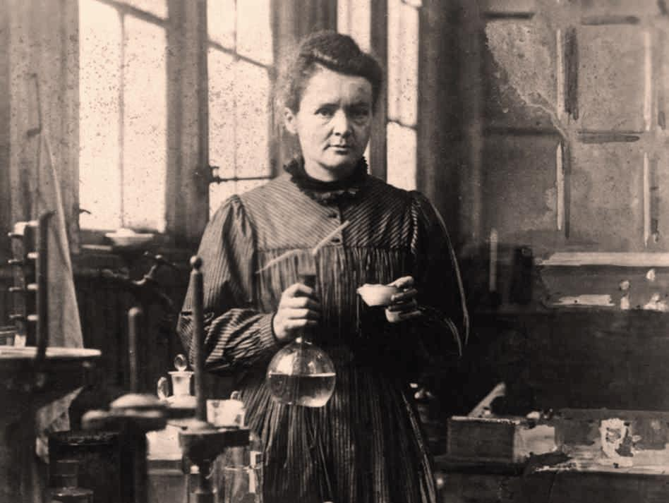

Marie Curie is probably the most famous woman scientist who has ever lived. Born Maria Sklodowska in Poland in 1867, she is famous for her work on radioactivity, and was twice a winner of the Nobel Prize. With her husband, Pierre Curie, and Henri Becquerel, she was awarded the 1903 Nobel Prize for Physics, and was then sole winner of the 1911 Nobel Prize for Chemistry. She was the first woman to win a Nobel Prize.
From childhood, Marie was remarkable for her prodigious memory, and at the age of 16 won a gold medal on completion of her secondary education. Because her father lost his savings through bad investment, she then had to take work as a teacher. From her earnings she was able to finance her sister Bronia's medical studies in Paris, on the understanding that Bronia would, in turn, later help her to get an education.
In 1891 this promise was fulfilled and Marie went to Paris and began to study at the Sorbonne (the University of Paris). She often worked far into the night and lived on little more than bread and butter and tea. She came first in the examination in the physical sciences in 1893, and in 1894 was placed second in the examination in mathematical sciences. It was not until the spring of that year that she was introduced to Pierre Curie.
Their marriage in 1895 marked the start of a partnership that was soon to achieve results of world significance. Following Henri Becquerel's discovery in 1896 of a new phenomenon, which Marie later called 'radioactivity', Marie Curie decided to find out if the radioactivity discovered in uranium was to be found in other elements. She discovered that this was true for thorium.
Turning her attention to minerals, she found her interest drawn to pitchblende, a mineral whose radioactivity, superior to that of pure uranium, could be explained only by the presence in the ore of small quantities of an unknown substance of very high activity. Pierre Curie joined her in the work that she had undertaken to resolve this problem, and that led to the discovery of the new elements, polonium and radium. While Pierre Curie devoted himself chiefly to the physical study of the new radiations, Marie Curie struggled to obtain pure radium in the metallic state. This was achieved with the help of the chemist André-Louis Debierne, one of Pierre Curie's pupils. Based on the results of this research, Marie Curie received her Doctorate of Science, and in 1903 Marie and Pierre shared with Becquerel the Nobel Prize for Physics for the discovery of radioactivity.
The births of Marie's two daughters, Irène and Eve, in 1897 and 1904 failed to interrupt her scientific work. She was appointed lecturer in physics at the École Normale Supérieure for girls in Sèvres, France (1900), and introduced a method of teaching based on experimental demonstrations. In December 1904 she was appointed chief assistant in the laboratory directed by Pierre Curie.
The sudden death of her husband in 1906 was a bitter blow to Marie Curie, but was also a turning point in her career: henceforth she was to devote all her energy to completing alone the scientific work that they had undertaken. On May 13, 1906, she was appointed to the professorship that had been left vacant on her husband's death, becoming the first woman to teach at the Sorbonne. In 1911 she was awarded the Nobel Prize for Chemistry for the isolation of a pure form of radium.
During World War I, Marie Curie, with the help of her daughter Irène, devoted herself to the development of the use of X-radiography, including the mobile units which came to be known as ‘Little Curies', used for the treatment of wounded soldiers. In 1918 the Radium Institute, whose staff Irène had joined, began to operate in earnest, and became a centre for nuclear physics and chemistry. Marie Curie, now at the highest point of her fame and, from 1922, a member of the Academy of Medicine, researched the chemistry of radioactive substances and their medical applications.
In 1921, accompanied by her two daughters, Marie Curie made a triumphant journey to the United States to raise funds for research on radium. Women there presented her with a gram of radium for her campaign. Marie also gave lectures in Belgium, Brazil, Spain and Czechoslovakia and, in addition, had the satisfaction of seeing the development of the Curie Foundation in Paris, and the inauguration in 1932 in Warsaw of the Radium Institute, where her sister Bronia became director.
One of Marie Curie's outstanding achievements was to have understood the need to accumulate intense radioactive sources, not only to treat illness but also to maintain an abundant supply for research. The existence in Paris at the Radium Institute of a stock of 1.5 grams of radium made a decisive contribution to the success of the experiments undertaken in the years around 1930. This work prepared the way for the discovery of the neutron by Sir James Chadwick and, above all, for the discovery in 1934 by Irène and Frédéric Joliot-Curie of artificial radioactivity. A few months after this discovery, Marie Curie died as a result of leukaemia caused by exposure to radiation. She had often carried test tubes containing radioactive isotopes in her pocket, remarking on the pretty blue-green light they gave off.
Her contribution to physics had been immense, not only in her own work, the importance of which had been demonstrated by her two Nobel Prizes, but because of her influence on subsequent generations of nuclear physicists and chemists.